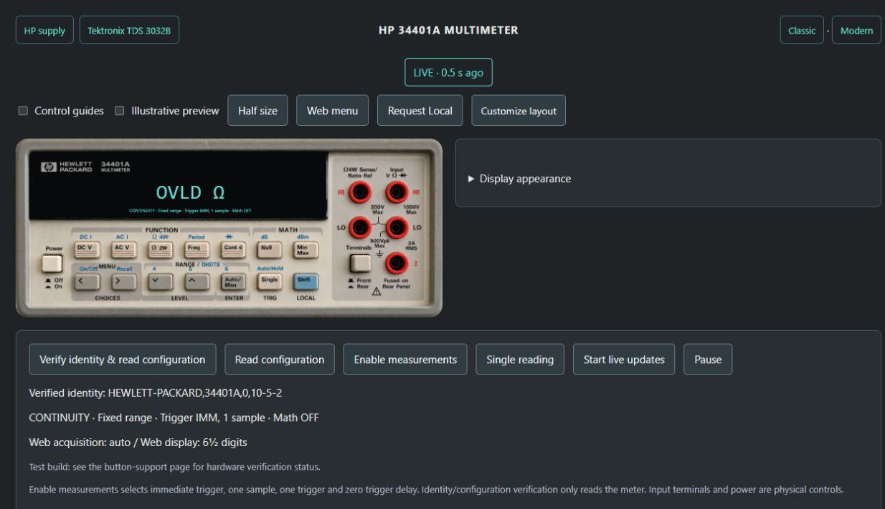
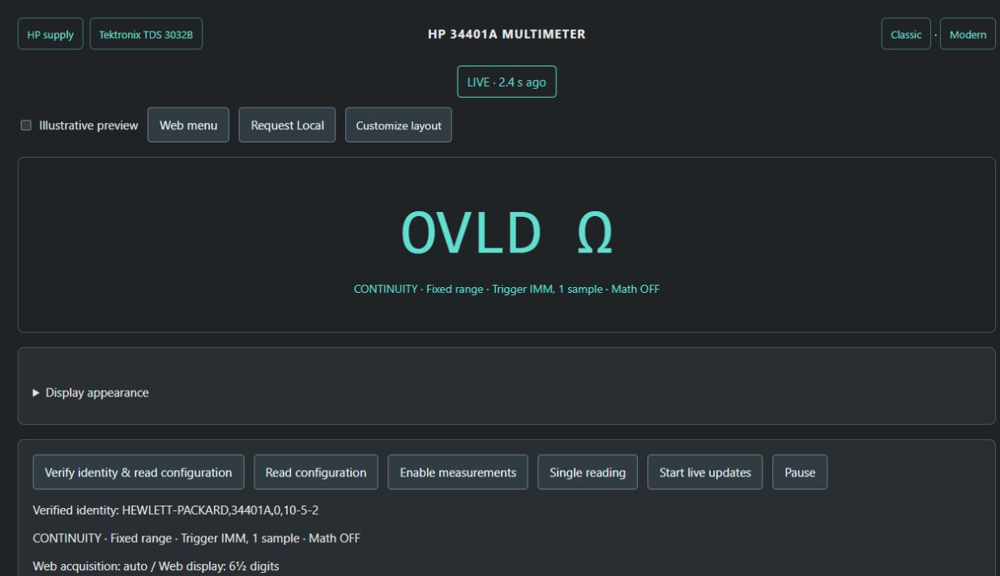
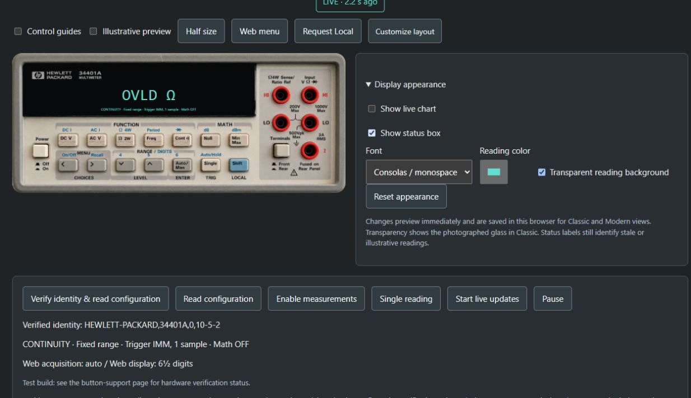
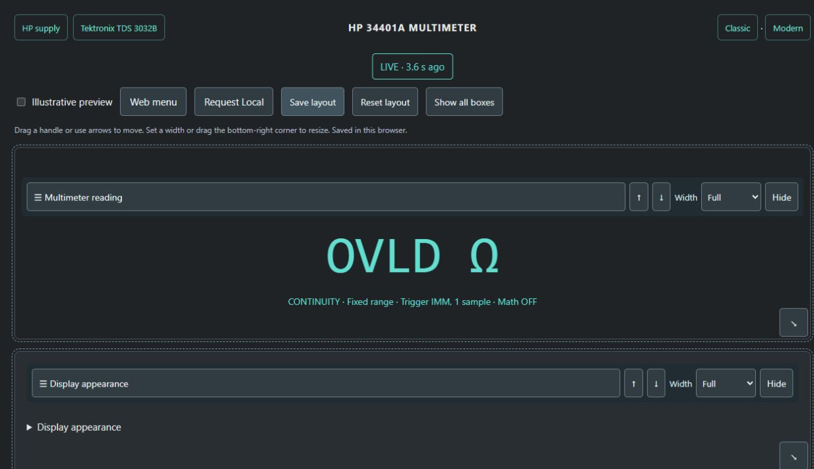

Start here
Installation modes: The meter can run alone, without the supply application, or as part of the integrated suite. The meter-only installer serves Classic, Modern and this manual on port 8082 and hides links to unselected instruments. Its trusted-LAN HTTP mode has no login or encryption; the integrated host retains its existing security policy. Both modes use the same shared adapter broker. Keep acquisition active in only one meter host at a time.
This manual covers the Fischer web controller for the HP 34401A on the test server. Classic and Modern use the same measurement service and shared GPIB adapter. Switching views changes presentation; instrument configuration and acquisition are shared across browsers.
- Connect the existing USB–GPIB adapter to the test Pi and the meter. On the physical meter select HP-IB / 488 and SCPI. The tested meter address is 22; the supply address is 10.
- Open Classic or Modern and select Verify identity & read configuration. The tested identity is
HEWLETT-PACKARD,34401A,0,10-5-2. - Confirm the input wiring and physical Front/Rear selector. Select Enable measurements to choose immediate trigger, one trigger, one sample and zero trigger delay.
- Select a function. For voltage, DC V selects DC and AC V selects AC. Shift then DC V or AC V selects current instead.
- Select Single reading for one immediate acquisition, or Start live updates for repeated readings. Pause stops web acquisition.
Function and configuration commands change the physical meter. Appearance, charts and layout settings change the web display. Leave Illustrative preview unchecked when measuring. Connect voltage across a circuit and current in series using the appropriate terminals; remove power before changing current wiring. Follow the instrument manual’s limits and safety instructions.
Classic and Modern


Click the photographed buttons or use the labeled Measurement controls below the panel. Hover or keyboard-focus a control for its primary and shifted function. Control guides add optional cyan/amber overlays; leave them off for the photographic appearance. On small screens use the labeled control bank and the separate readable measurement text.


The top navigation links to the supply, Tektronix, the other meter view and this manual. Multiple open pages share meter settings and polling; pause or configuration changes in one page affect other pages.
Understand readings and status
| Indication | Meaning / action |
|---|---|
| LIVE · age | A successful measured sample and its age. The timestamp matters; opening a page does not itself prove fresh communication. |
| STALE | The last sample is retained but is no longer current. Check the error and acquisition state before relying on it. |
| ILLUSTRATIVE / preview | Demonstration display only. Preview values are never plotted as measured samples. Turn preview off to view measurements. |
| HELD / waiting for stability | Web Hold is showing a stable capture, or waiting for stable measured samples. It is a web equivalent, not the physical Auto/Hold feature. |
| OVLD | The meter reports overload/out of range. Open-input Continuity can legitimately show OVLD. It is not a numeric sample for a chart. |
| Disconnected / no live data | No usable measured sample is available. Verify the cable, power, address and identity. |
| Function / AUTO / trigger / math | Configuration read back from the instrument. Web display digits and acquisition mode are shown separately. |
Range, digits and math
Auto/Man toggles autorange for functions that support it. Up/down changes the available manual range; Continuity and Diode have fixed behavior. Watch configuration readback rather than assuming a click succeeded.
The digit shortcuts combine instrument timing and a web display mask. For DC voltage/current and resistance, 4½ chooses 1 PLC and 5½/6½ choose 10 PLC. Frequency/Period use apertures of 0.01, 0.1 and 1 second. On the connected firmware, AC digit shortcuts change the web display mask only; AC conversion resolution is unchanged. Continuity/Diode do not support these resolution changes.
Null subtracts an offset; dB and dBm use their selected reference. The web menu edits Null offset, dB reference and dBm reference resistance. The dBm reference is stored in meter nonvolatile memory. Select Math off to return to the base measurement. Min/Max uses the meter’s CALC:AVER registers, available through the Math menu. Session statistics are a separate backend summary of successful numeric samples and reset when measurement configuration changes.
Acquisition, triggering and Local
Single reading is intended for immediate triggering. The front-panel Single action supports the selected IMM, BUS or EXT source. IMM uses READ?; BUS uses INIT, *TRG and FETC?; EXT arms acquisition and waits a bounded time for an actual external pulse. Selecting EXT does not generate a pulse. External-pulse acquisition remains pending hardware verification.
Web acquisition requires one trigger, one sample and trigger delay no greater than 0.2 seconds. The menu can configure larger counts/delays for other uses, but web acquisition rejects those settings. Enable measurements returns to the supported immediate setup. Very slow integration/filter settings can exceed the bounded adapter deadline; use faster settings rather than repeatedly retrying.
Start live updates repeatedly acquires using the shared service; the interval includes transaction time. EXT is not suitable for background polling. Pause stops acquisition without powering off the meter. Request Local first stops meter polling and then requests addressed Go To Local. An explicit new meter command can return it to remote. The web app records the request; it does not claim to sense the physical Remote annunciator. The instrument’s SYST:LOC command is an RS-232 facility, so GPIB uses the adapter’s addressed Local operation.

Display appearance and chart


Expand Display appearance to select the font and reading color. Transparent reading background lets the photographed glass show around the Classic digits; turn it off for an opaque reading background. Show status box controls the small status badge; embedded stale/preview labels remain. Reset appearance restores the appearance defaults. Preferences are stored in this browser for both views; selected fonts use installed browser fonts with fallbacks.
- Check Show live chart.
- Enable measurements and Start live updates, or take individual readings.
- Use Clear chart to discard this tab’s history. Uncheck Show live chart to hide it.
The meter chart plots up to 300 measured numeric samples collected while this page is open. It uses existing acquisition and does not open another GPIB connection or create separate hardware polling. Overloads and illustrative data are not plotted. History clears when function, units or math changes and is not saved after the tab closes. A hidden chart can still retain samples collected in that open tab. The meter has one measurement trace; voltage/current/power selection belongs to the supply chart.
Move, resize and hide boxes


- Select Customize layout beside Request Local.
- Drag a box handle, or use its move-earlier/move-later arrows.
- Choose Full, Two thirds, Half or One third width. Drag the bottom-right grip to adjust width and minimum height. Focus a grip and use arrow keys for keyboard resizing.
- Use Hide/Show on individual boxes. Hidden boxes remain available while editing. Show all boxes restores boxes hidden by the layout editor; optional chart/menu features still need to be enabled.
- Select Save layout. Reset layout restores default arrangement.
Layouts are saved in this browser by instrument and view, with separate desktop/mobile arrangements. Phone layouts use full-width boxes. Half size adjusts the Classic instrument size. Layout and visibility changes do not change instrument settings. Clearing browser site data removes saved preferences.
Troubleshooting
| Symptom | What to do |
|---|---|
| No device found / USB control-transfer error | Check adapter power and cable on the test Pi. Reconnect the existing adapter, wait for USB enumeration, then verify identity. Avoid a second application opening an independent VISA session. |
| Ten-second recovery pause | The last meter transaction failed. Background acquisition stops, the last value becomes stale and a bounded cooldown applies. Wait, correct the connection, then verify identity before enabling measurements again. |
| Previous USB transfer failed / reconnect required | Reconnect the adapter before retrying. Automatic device clear and USB reset are disabled because prior reset attempts could hang the adapter/kernel. |
| Meter is busy | Another meter operation owns the operation queue. Let it finish, then retry once. Do not repeatedly click or open competing adapter sessions. |
| READ? or FETC? timeout | Check trigger source, counts, delay and conversion speed. EXT needs a real pulse. The acquisition query timeout is 1.8 seconds within a three-second worker deadline; a missing response is not a zero reading. |
| Function changes but no new value | Read configuration confirms settings, not a measurement. Take a reading or start live updates and check sample age. |
| Chart is empty | Enable the chart and acquisition. OVLD, preview and failed readings do not produce numeric plotted points. |
| Supply unavailable during adapter fault | Meter cooldown does not intentionally hold the shared adapter lock, but a physically failed shared USB adapter can prevent both instruments communicating. Restore the adapter first. |
| No access to a hidden box | Enter Customize layout and use Show all boxes; check feature-specific Show live chart and Web menu controls too. |
If USB remains unresponsive after reconnecting, inspect service/kernel logs before considering a Pi restart. A reboot interrupts the web controllers. Never assume stale readings mean outputs or connected circuits are safe.
Verified behavior and remaining checks
| Area | Evidence / status as of 15 November 2026 |
|---|---|
| Identity | Connected meter returned HEWLETT-PACKARD,34401A,0,10-5-2. |
| Function selection | All eleven function selections read back on the connected meter: DCV/DCI/ACV/ACI/2W/4W/Frequency/Period/Continuity/Diode/DC ratio. |
| Range / digits / math | Range/autorange, DC timing and frequency aperture, AC web masks, Null/MinMax/dB/dBm and reference readbacks exercised. AC coarse resolution writes were rejected by this firmware and are not advertised as supported. |
| Menu settings | Trigger source/count/delay, AC filter, input resistance, Autozero, beeper and display writes/readbacks exercised, with settings restored during those tests. |
| Measurements | Immediate and BUS-triggered acquisitions exercised, including AC voltage. Screenshots show actual live open-input Continuity. This is not calibrated known-source accuracy verification. |
| Pending physical checks | Actual external-trigger pulse acquisition; physical Remote annunciator after Local; simultaneous supply-and-meter hardware use on the shared bus remain pending. |
| Software / deployment | 39 backend tests passed before this documentation update. Documentation uses static local assets and does not initiate hardware transactions. This manual is for .108; .177 was not changed for this work. |
“Remote” in the button table identifies implementation type, not a claim that every possible range/function/math combination has been tested. Use the returned instrument state and errors as the authority for each operation.
Architecture and maintenance
The meter package is /home/pi/instrument-suite/hp34401a, integrated with the supply Flask application. Both views consume the same backend. Cached status is available at /api/multimeter/status; controls use authenticated/same-origin POST requests under /api/control/meter/. Reading cached status does not communicate with hardware.
The single fischer-gpib broker coordinates complete transactions through /run/fischer-gpib/adapter.sock. Address selection, writes, reads and readback stay inside the same transaction. Worker operations have bounded deadlines; the broker isolates failed workers instead of allowing a competing adapter handle. Application/configuration is under /home/pi/instrument-suite; retain server-specific address, authentication and supply-enable settings when updating.
Useful read-only diagnostics on the test Pi:
systemctl status hp6033a fischer-gpib --no-pager
sudo journalctl -u fischer-gpib -n 60 --no-pager
sudo journalctl -u hp6033a -n 60 --no-pagerBack up application, configuration and service files before an update. Restarting hp6033a reloads the shared web application and clears in-memory meter state. Verify identity and read configuration again afterward. Do not reset the instrument, change output state or erase presets as part of routine documentation/UI updates.
Sources, attribution and license
This is the web-controller user manual, not the manufacturer’s complete electrical safety, calibration or service manual. Consult the manufacturer-authored 34401A User’s Guide, 34401-90004, Edition 10 (external PDF) for instrument limits and command reference. The external source requires internet; this manual and screenshots are stored locally.
Front-panel photograph: HP 34401A Multimeter by Afandrf, Wikimedia Commons, with earlier perspective/shadow edits attributed to Pittigrilli. License: Creative Commons Attribution-ShareAlike 4.0 International. Application-image changes include front-panel perspective/crop, removal of plugged leads, a cleared display, rounded perimeter presentation, and digital reading/control overlays. No endorsement is implied.

The modified panel and screenshots incorporating it remain CC BY-SA 4.0. This HTML manual and its screenshots are also supplied under CC BY-SA 4.0. Keep attribution, the license link and modification descriptions when sharing adaptations. Manufacturer documentation retains its own copyright and is linked, not reproduced here.